Complex Workflow
정책·정보·업무 흐름을 사용자 목적에 맞는 IA와 Product Flow로 재구성합니다.
복잡한 서비스와 업무 흐름을 구조화하는 UI/UX · Product Designer.
복잡한 정책과 업무 구조를 역할·상태·다음 행동 중심으로 구조화하고, IA에서 Interaction, Design System, 구현 품질까지 연결합니다.
Complex UX · Design Systems · Admin / B2B Workflow
정책·정보·업무 흐름을 사용자 목적에 맞는 IA와 Product Flow로 재구성합니다.
역할과 상태를 다음 행동으로 연결해 복잡한 운영 업무를 명확하게 만듭니다.
공통 패턴과 UI 기준으로 제품이 확장되어도 유지되는 시스템을 설계합니다.
Prototype과 개발 협업으로 설계를 구체화하고, Cross-platform UX와 구현 품질을 확인합니다.
설명만 나열하지 않고 실제 화면과 함께 문제 정의, 구조적 의사결정, 결과를 보여줍니다.
전문가·평가자·관리자 3개 역할이 같은 데이터를 서로 다른 권한과 상태로 처리하는 업무를 Role · Permission · Status 기준으로 구조화했습니다.
제안 단계 Prototype을 검증하며 기능 중심 화면만으로는 현재 업무와 다음 행동을 판단하기 어렵다는 점을 확인했습니다. 역할 → 업무 → 상태 → 다음 행동을 핵심 설계 기준으로 정리했습니다.
Dashboard와 상태별 CTA로 현재 상태를 다음 행동에 연결했습니다. Table · Search · Filter · Form · Status · Action은 공통 Component와 Pattern으로 정의했습니다.
Prototype · Design Review · Design QA로 정책과 구현 화면의 정합성을 확인하고, PM·개발과 구현 기준을 맞췄습니다. 3 Roles → 1 Workflow는 세 역할을 하나의 업무 기준으로 통합한 설계 증거입니다.
디자인 단독 담당 · UX Strategy · IA · User Flow · Prototype · UI · Design QA
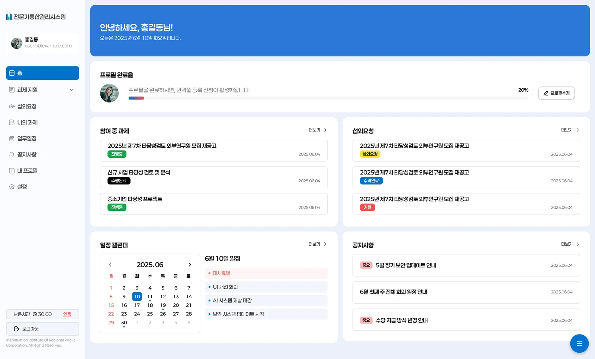
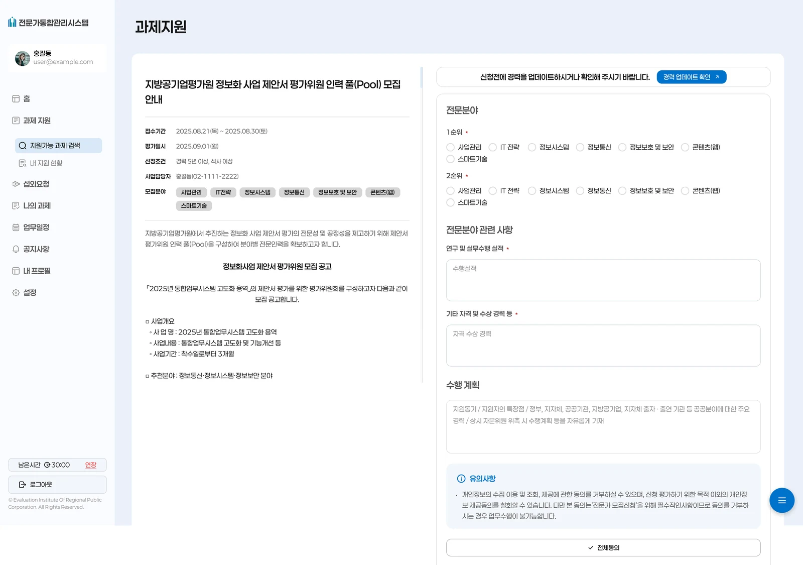
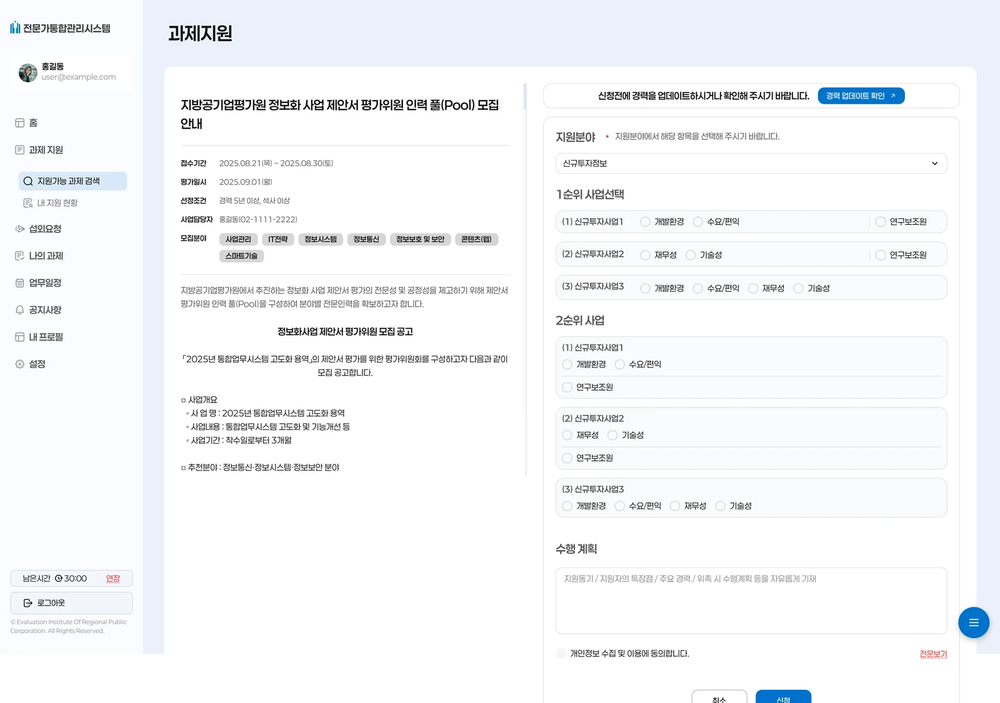
10개 서비스의 공통성과 차이를 분리하고 Grid · Navigation · Component · Responsive 기준을 정의해, 반복 가능한 UX/UI 체계로 연결했습니다.
공통 UI는 Pattern과 Component로 표준화하고, 서비스별 차이는 Variant와 Content Policy로 구분했습니다. Foundation → Standard → Pattern → Template으로 신규 화면에도 적용할 수 있는 기준을 정리했습니다.
Define → Apply → Review → QA 흐름으로 대표홈페이지에서 정의한 기준을 서비스별로 적용했습니다. 담당 디자이너에게 기준을 전달하고 Design Review로 방향을 맞췄습니다.
PM·개발과 Grid · Navigation · Component · Responsive 구현 기준을 정렬하고, Design QA로 공통 가이드가 실제 화면에서도 유지되는지 확인했습니다.
Design PL · 대표홈페이지 설계 · Shared UX/UI Framework · Design System · Design Review · Design QA
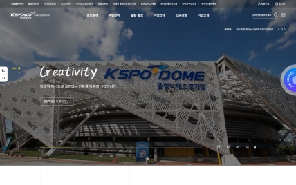
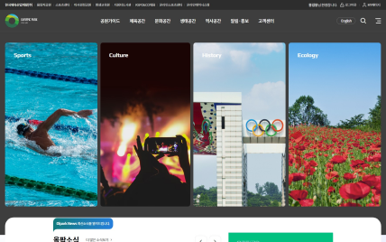
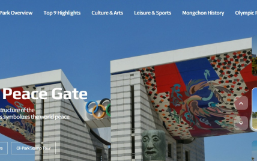
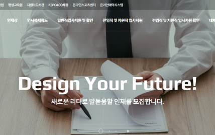
평가자의 경험에 따라 흔들리는 리뷰 기준을 IA · Visual Flow · CTA · Content · Mobile 5개 평가 영역으로 구조화한 자기주도 제품입니다.
5일 MVP에서는 평가 기준 검증을 우선해 Screenshot 기반 v1을 선택했습니다. 이후 URL 자동 캡처 · PDF Export · PostHog 계측으로 확장했습니다.
PostHog로 capture → audit_started → audit_completed → report usage 흐름을 계측했습니다. 분석 완료 이후 리포트가 실제로 활용되는지는 계속 확인할 검증 과제로 두었습니다.
점수 자체보다 문제 근거 → 영향 → 개선 우선순위를 설명하는 것이 사용자의 다음 행동을 돕는 핵심이라고 판단했습니다.
내부 반복 테스트 기준 UX 분석 시간 약 30분 → 약 2분, 약 93% 단축. 실제 사용자 전환율 개선 성과를 의미하지 않습니다.
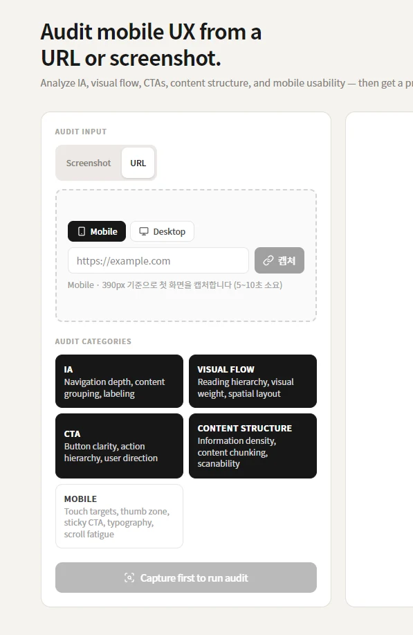
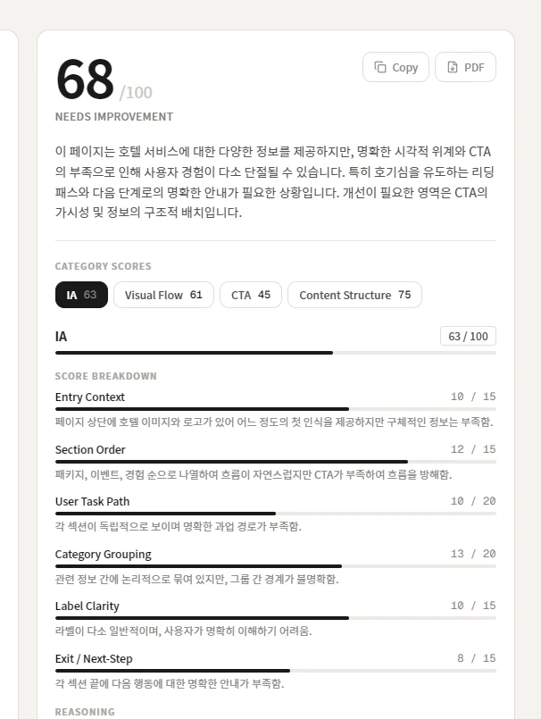
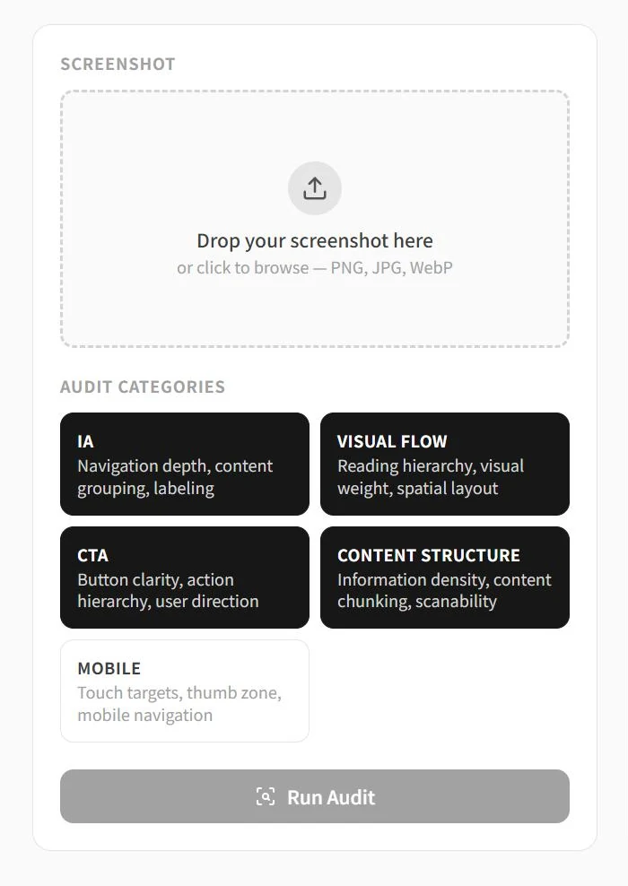
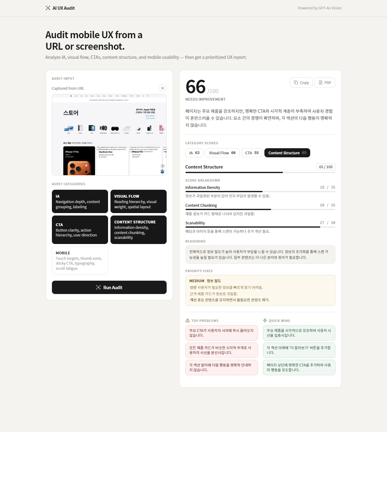
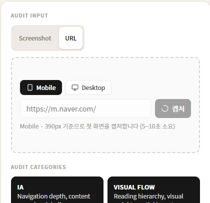
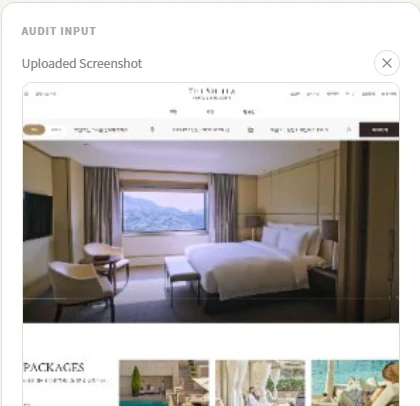
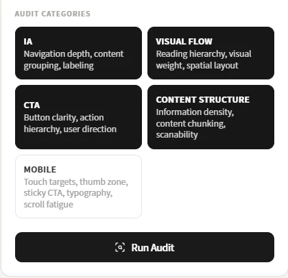
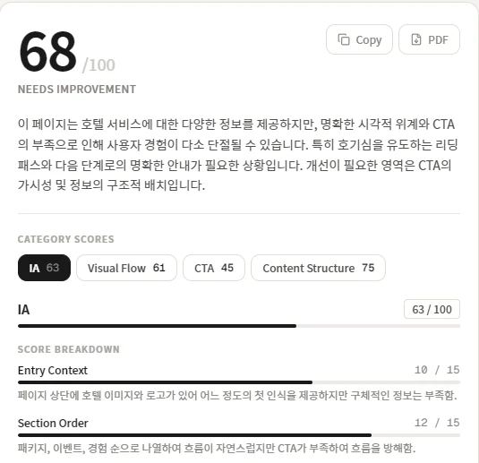
Desktop · Mobile에서 국가 · 주제 · 저자 · 발행호 · 통합검색을 서로 다른 탐색 목적에 맞춰 연결하고, 콘텐츠와 언어 길이가 달라도 정보 위계가 유지되도록 정리했습니다.
Archive / Country / Topic 등 여러 탐색 경로와 읽기 흐름을 구성했습니다. 콘텐츠 유형에 따라 정보 밀도를 조절하며 공통 Component / Pattern을 적용했습니다.
Desktop · Mobile 공통 구조와 Responsive 기준을 정의해 다국가·다언어 콘텐츠를 일관되게 탐색하도록 설계했습니다.
개발팀과 Component와 Responsive 동작 기준을 공유했습니다. 오픈 이후 Navigation · State · Responsive 동작을 Design QA하며 전체 흐름과 구현 품질을 확인했습니다.
IA · Content Hierarchy · Desktop / Mobile UX/UI · Responsive · 개발 협업 · Design QA
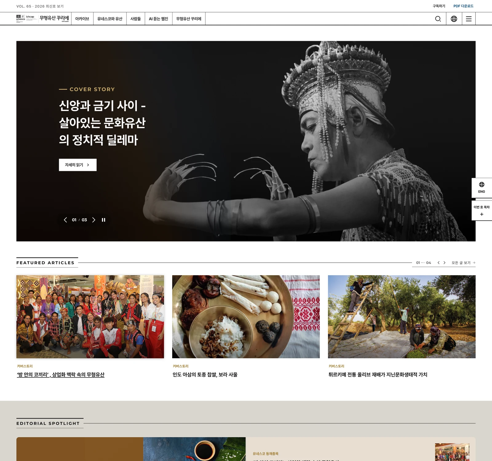
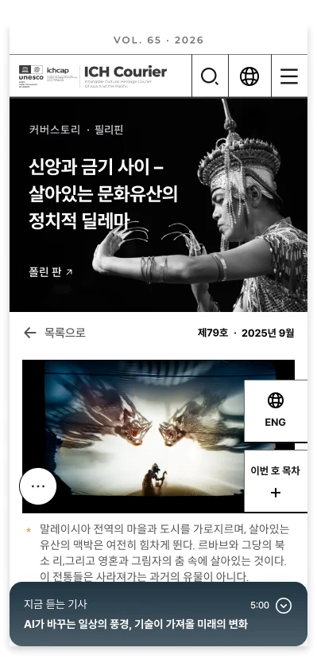
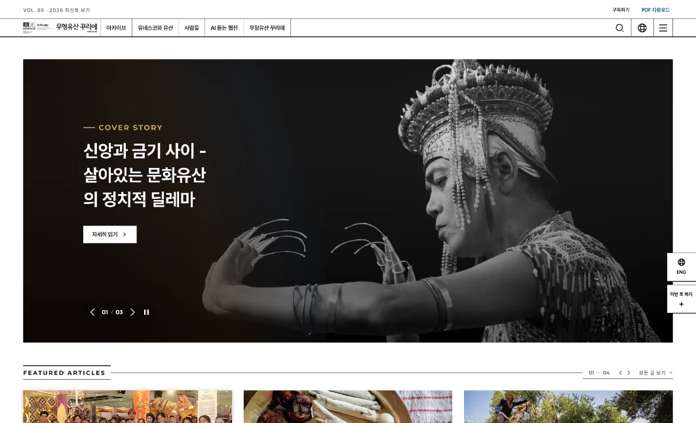
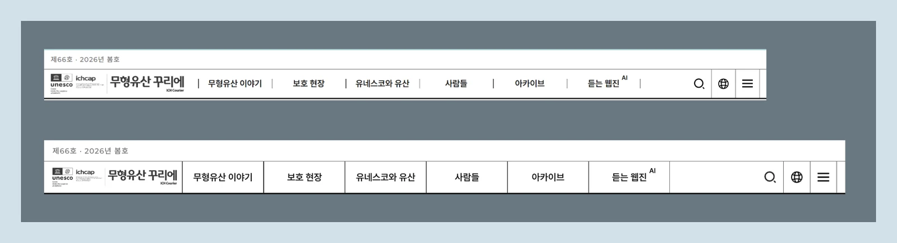
사용자 인터뷰와 기존 서비스 분석으로 탐색 단절 지점을 확인하고, 작품·작가·프로그램을 찾는 사용자 행동을 중심으로 IA와 Discovery Journey를 재구성했습니다.
운영 조직과 콘텐츠 유형에 따라 분산된 경로를 DISCOVER · READ · PARTICIPATE · ARCHIVE 4개 행동 축으로 정리해 발견 → 읽기 → 참여 → 재탐색으로 연결했습니다.
PC · Mobile Responsive 기준을 적용하고, CMS로 콘텐츠가 계속 추가되어도 메인·목록·상세 구조가 유지되는 공통 Pattern을 정리했습니다.
운영 가능한 구조와 Content Discovery 경험을 실제 서비스에 적용했습니다. 2023 웹어워드코리아 문화웹진 분야 대상 · GDWEB Winner Prize를 수상했습니다.
Creative Manager(CM) · User Research · IA · Discovery Flow · UX/UI · Responsive · Design QA
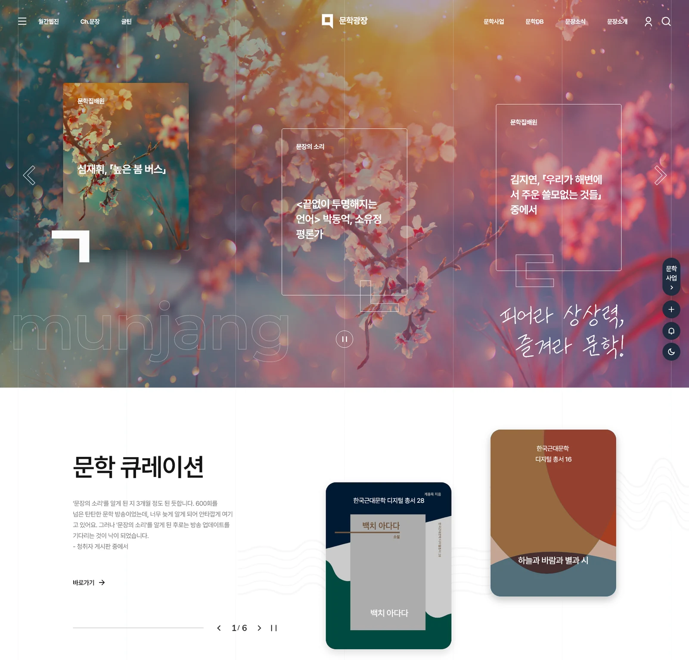
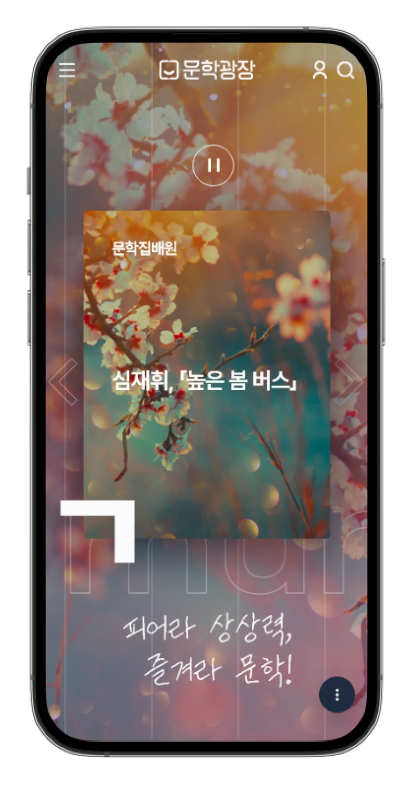
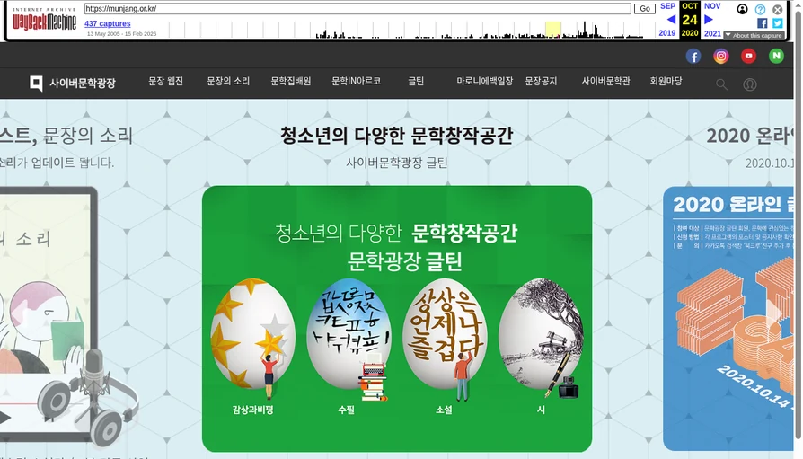
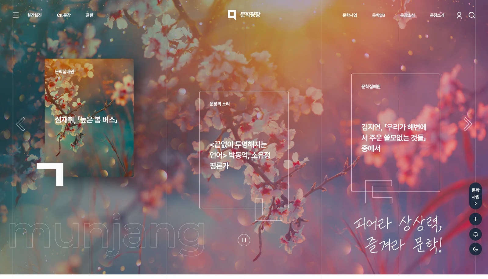
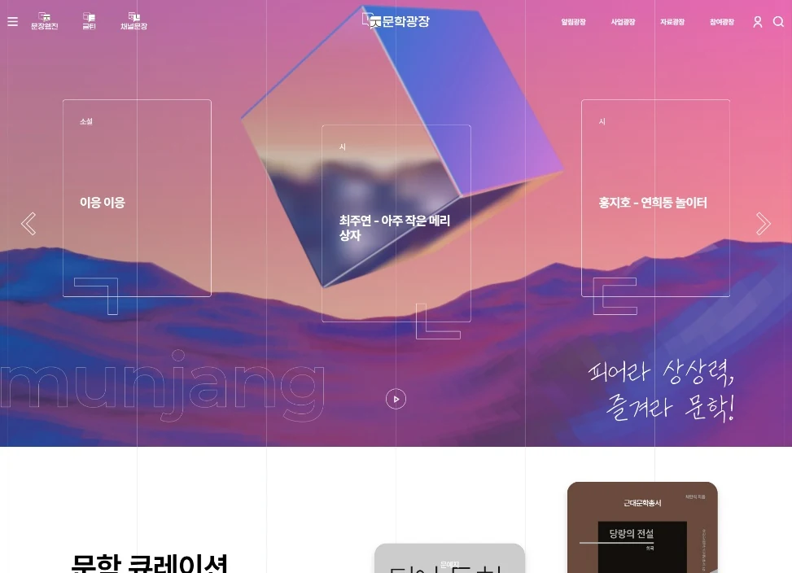
서비스 맥락을 이해하고, 사용자 판단을 돕는 구조부터 실제 구현 품질까지 연결해왔습니다.
UI/UX Design · Complex Workflow · Design System · Interaction · Design QA
UX/UI · Content Discovery · Multi-service UX · Design System · Design Leadership
B2B Software · Application UI · Viewer/Admin · TV/Navigation UI
역할·권한·상태를 기준으로 업무 흐름을 구조화
공통 Pattern과 Component로 반복 가능한 UX/UI 체계 구축
현재 상태와 다음 행동이 명확한 운영 경험 설계
Desktop · Mobile과 다양한 콘텐츠 환경을 연결
Prototype · AI · Measurement로 아이디어를 제품으로 검증
개발 협업으로 설계 의도와 구현 품질을 정렬
복잡한 도메인을 빠르게 이해하고,
사용자가 이해할 수 있는 제품 구조로 만듭니다.
Contact